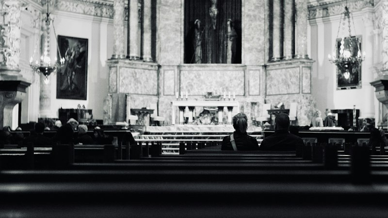
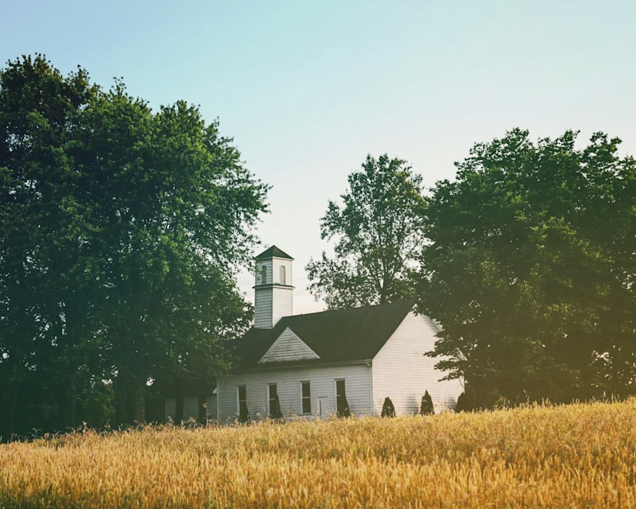
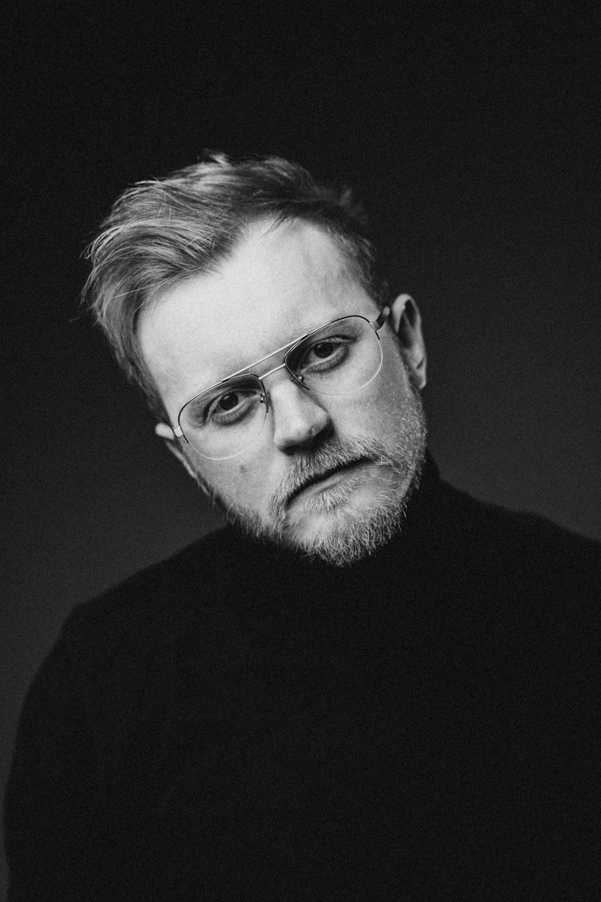

Gereja Hati Kudus Yesus Ganjuran adalah kompleks peziarahan bersejarah di Yogyakarta yang dirancang 100% ramah bagi difabel, lansia, dan peziarah dari segala latar belakang. Dilengkapi jalur landai kursi roda di seluruh pelataran Candi Jawa dan taman doa.
Jalur landai kursi roda di sekeliling candi, pendampingan relawan bagi peziarah sakit, dan area doa yang tenang.
Suasana hening batin di kaki arca Hati Kudus Yesus berbusana pangeran Jawa, membawa keteduhan jiwa bagi setiap pencari Allah.
Perpaduan sakral iman Katolik dan kebudayaan luhur Jawa, diiringi alunan gamelan pada Misa Jumat Pertama setiap bulan.
Didirikan pada tahun 1924 oleh Joseph dan Julius Schmutzer bersama masyarakat Ganjuran, tempat suci ini dibangun dengan komitmen bahwa rumah Allah harus menjadi tempat perlindungan bagi kaum buruh, masyarakat papa, dan orang-orang yang menderita sakit.
Peziarah dapat mengambil air berkah dari mata air Candi Ganjuran yang dipercaya membawa kesegaran rohani dan pengharapan akan kesembuhan ilahi.


Setiap Jumat Pertama dan Minggu pagi, ribuan peziarah dari berbagai pulau di Indonesia hadir untuk bersujud dalam misa kudus dan doa permohonan.
Just take out whatever you don't want. It'll change your entire perspective. This is where you take out all your hostilities and frustrations.
Maybe he has a little friend that lives right over here. At home you have unlimited time. Son of a gun. And maybe a little bush lives there.
“Datanglah kepada-Ku, semua yang letih lesu dan berbeban berat, Aku akan memberi kelegaan kepadamu. Di Ganjuran, tidak ada perbedaan; semua diterima sebagai anak-anak Allah yang terkasih.”— Rm. Raymundus Sugihartanto, Pr | Pastor Paroki

Kompleks Candi Ganjuran menyediakan fasilitas kursi roda pinjaman gratis, toilet khusus difabel, serta asrama penginapan retret yang ramah lansia.
The man who does the best job is the one who is happy at his job. Isn't that fantastic? You have to allow the mind to create to make it beautiful.
Maybe he has a little friend that lives right over here. At home you have unlimited time. Kesejukan Hati di Pelataran Candi. This is your world.
Just relax and let it flow. That easy. That's what makes life fun. That you can make these decisions. That you can create the world that you want.